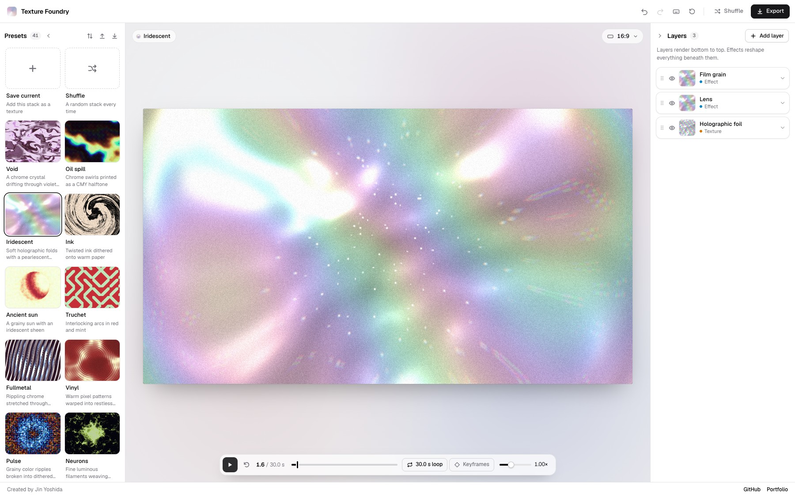

Work 01 / 11
Texture Foundry
A browser-based workspace for creating textured stills and seamless motion through layers, effects and real-time experimentation.

Overview
From layered texture to looping motion.
Texture Foundry is a creative tool for building textures and animated backgrounds in the browser. I designed it around a layered workflow: start with a preset or a base texture, then combine patterns, colour and effects to shape the image. More than 60 texture and effect layers can be mixed with blend modes, making it possible to move from subtle grain and gradients to intricate, distorted compositions.
The preview updates as each layer changes, keeping the process visual and exploratory. A keyframe timeline and easing controls extend those compositions into seamless loops of up to 30 seconds. Built-in 3D shapes and imported models can also become part of the image, bringing depth and motion into the same workspace.
Finished stacks can be saved as presets, revisited and shared through import and export. The output can be taken into other design workflows as a still image or an animation, with support for PNG, JPEG, WebP, GIF, MP4 and WebM. Everything is processed locally in the browser, so the work stays on the user’s device.
Gallery
Next project
Divices